Iran: ceasefire survival curve. PREDICTIVE (market odds). Polymarket 'Yes' prices ~7:30 AM ET Nov 2. US-Iran ceasefire continues through: Nov 02 98%, Nov 04 94%, Nov 08 76%, Nov 15 57%, Nov 22 44%, Nov 30 38%, Dec 31 26%. Israel-Iran: Nov 02 99%, Nov 15 68%, Nov 30 54%, Dec 15 43%, Dec 31 36%. US announces end of Iranian blockade by: Nov 02 2026 2%, Nov 15 2026 14%, Nov 30 2026 26%, Dec 31 2026 41%, Mar 31 2027 64%. US-Iran Hormuz agreement by: Nov 02 3%, Nov 30 26%, Dec 31 34%. US invades Iran before 2027: 16%. Iran leadership change: Nov 30 2026 8%, Dec 31 2026 14%, Jun 30 2027 27%. Market prices are crowd-implied probabilities, not intelligence; markets resolve under their own rules. No AIS/PortWatch data used. Source: https://polymarket.com/event/us-iran-ceasefire-continues-throughptptpt
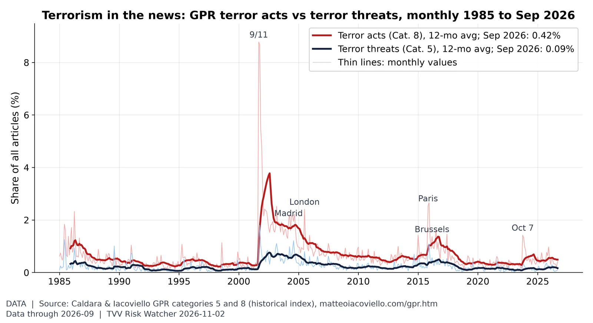
Terror acts vs terror threats. In September 2026, terror-act articles were 0.42% of all articles (2025 average 0.55%) and terror-threat articles 0.09% (2025 average 0.19%), far below the 9/11 peak of 8.8%. Source: https://www.matteoiacoviello.com/gpr.htm
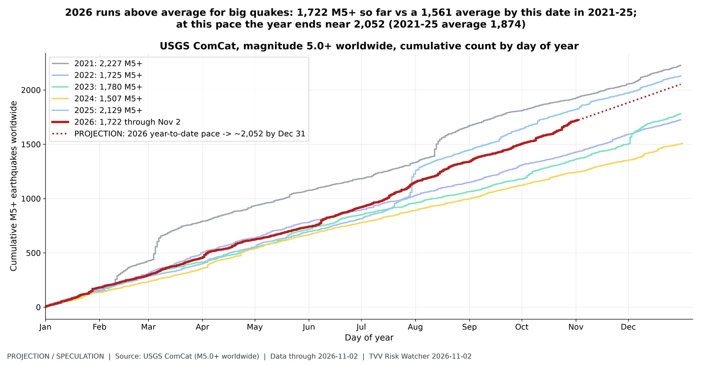
Quake pace: 2026 vs prior years. PREDICTIVE. USGS ComCat M5.0+ worldwide: 1,722 in 2026 through Nov 02 08:13 UTC vs same-date counts 2021 1,934, 2022 1,432, 2023 1,366, 2024 1,245, 2025 1,829; full-year totals 2021 2,227, 2022 1,725, 2023 1,780, 2024 1,507, 2025 2,129. Method: 2026 year-to-date daily rate held to Dec 31 (~2,052). Earthquakes are not predictable; this only shows where the current count is heading if the rate holds, and large aftershock sequences inflate counts. Source: https://earthquake.usgs.gov/earthquakes/search/
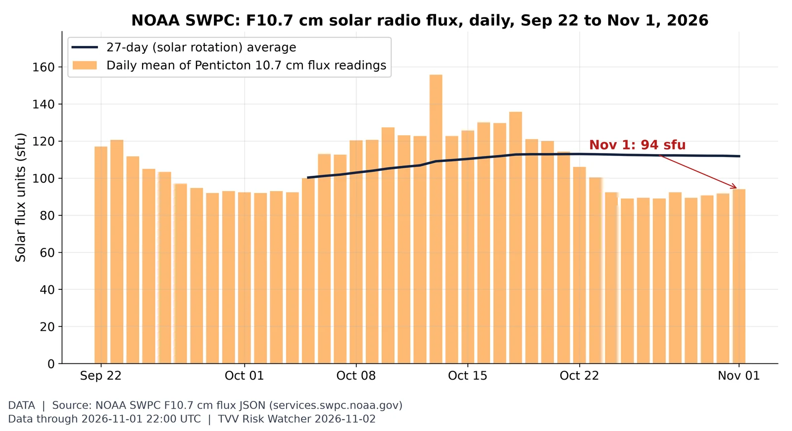
Solar activity proxy: F10.7 flux. The 10.7 cm solar radio flux, a standard proxy for solar activity and upper-atmosphere drag on satellites, was 94 sfu on Nov 1 (27-day average 112; window range 89-156). Source: https://www.swpc.noaa.gov/phenomena/f107-cm-radio-emissions
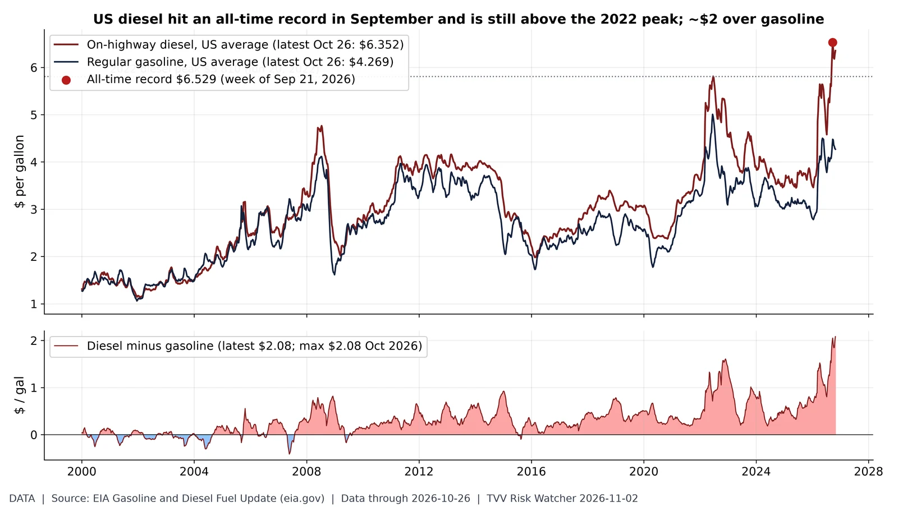
Diesel record: the freight-cost shock. US on-highway diesel hit an all-time record $6.529/gal in the week of Sep 21 and was $6.352 on Oct 26, still above the 2022 peak ($5.810); the premium over regular gasoline ($4.269) is $2.08 vs a record $2.08 (Oct 2026). Source: https://www.eia.gov/petroleum/gasdiesel/
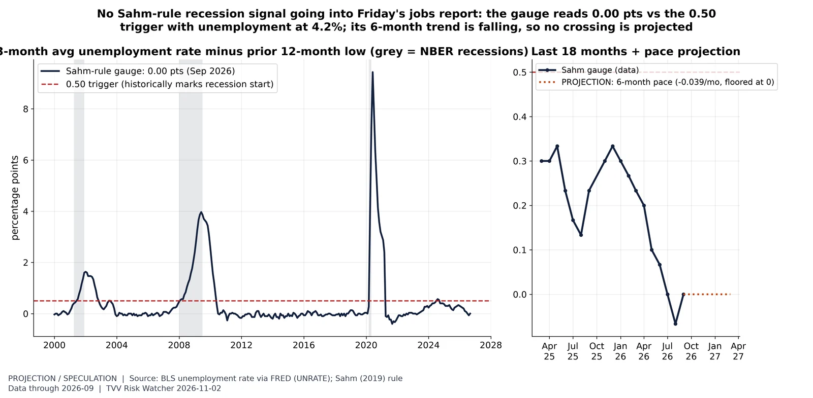
Sahm-rule gauge vs the trigger. PREDICTIVE (pace projection on real BLS data). Unemployment rate 4.2% in Sep 2026; Sahm gauge = 3-month average minus the lowest 3-month average of the prior 12 months = 0.00 pts. Method: straight-line extension of the last 6 months' change (-0.039 pts/month); its 6-month trend is falling, so no crossing is projected. A labeled projection, not a forecast. October jobs report due Fri Nov 6 (BLS). Jobs/Labor series. Source: https://fred.stlouisfed.org/series/UNRATE
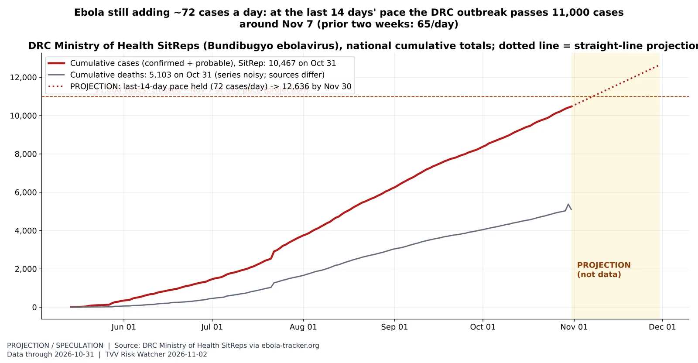
Ebola: where the current pace leads. PREDICTIVE. DRC SitRep cumulative cases 10,467 on Oct 31 (SitRep 170); deaths 5,103 (the death series jumps between sources: ebola-tracker 5,372 peak vs SitRep, so it is shown for context only). Method: straight-line extrapolation of the average daily increase over the last 14 days (72.3/day; 65.1/day in the two weeks before). This is a simple pace projection, not an epidemiological forecast; a slowing or accelerating outbreak, or reporting backlogs, would change it. Source: https://ebola-tracker.org/
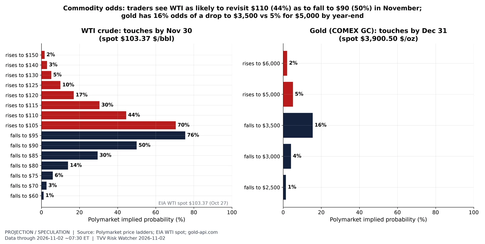
Oil and gold: price-range odds. PREDICTIVE (market odds). Polymarket 'what price will it hit' ladders ~7:30 AM ET Nov 2 (each bar = odds the price touches that level before the deadline). WTI in November: up $105 70%, up $110 44%, up $115 30%, up $120 17%, up $125 10%, up $130 5%, up $140 3%; down $70 3%, down $75 6%, down $80 14%, down $85 30%, down $90 50%, down $95 76% (the $100 upside rung already resolved Yes). Gold by Dec 31: up $5,000 5.1%, up $6,000 2.1%, up $7,000 1.8%; down $2,500 1.5%, down $3,000 4.1%, down $3,500 15.5%. Reference spot: WTI $103.37 (EIA Cushing, Oct 27, latest EIA daily), gold $3,900.50 (gold-api.com, Nov 2 07:07 ET). Illiquid rungs with no trading history (e.g. a $4,500 gold rung) are excluded. Source: https://polymarket.com/event/what-price-will-wti-hit-in-november-2026
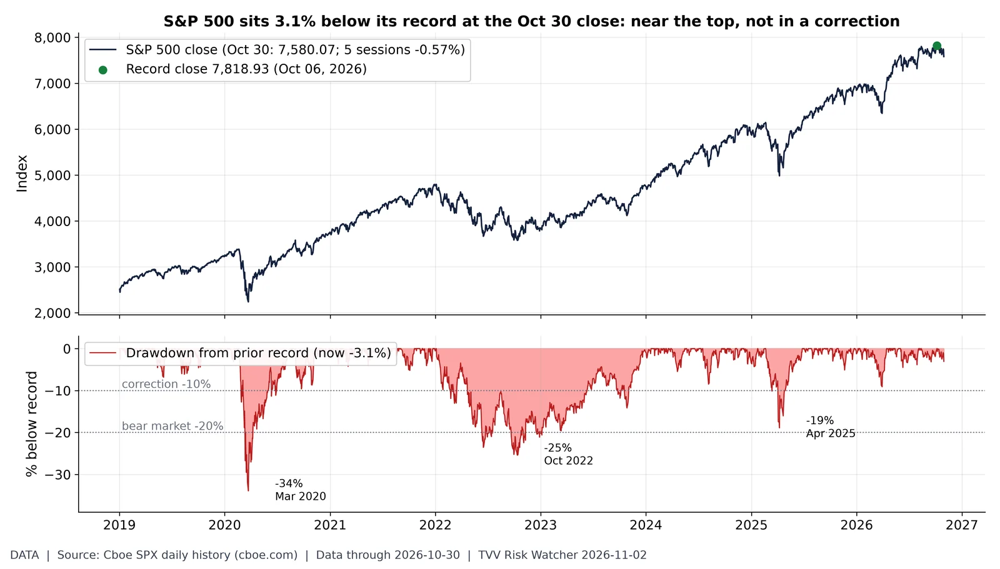
How far from the top. The S&P 500 closed Oct 30 at 7,580.07, -0.57% over 5 sessions and 3.1% below its Oct 06 record close of 7,818.93; for scale, the 2020, 2022 and 2025 drawdowns reached -34%, -25% and -19%. Source: https://www.cboe.com/us/indices/dashboard/spx/
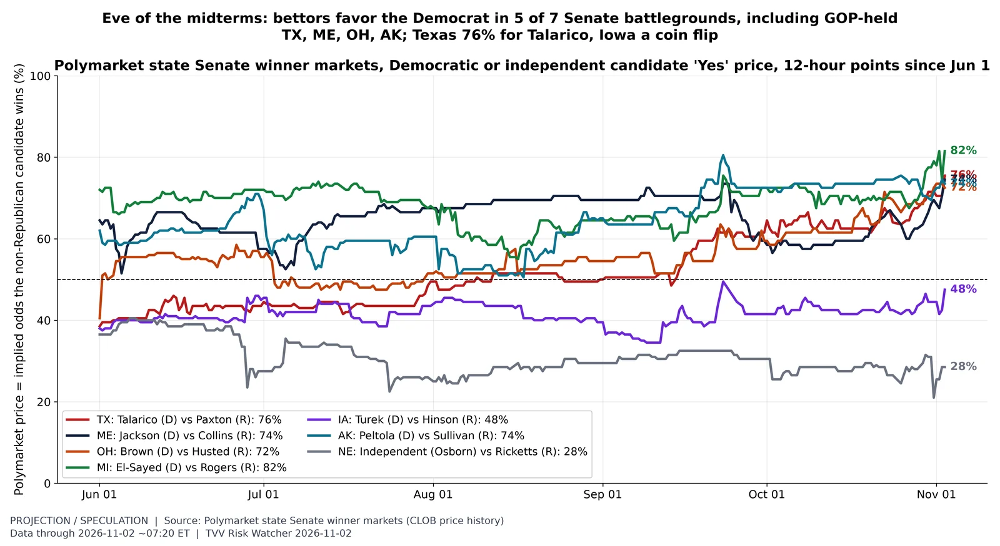
Senate battlegrounds: race-by-race odds. PREDICTIVE (market odds, not results). Polymarket 'Yes' prices for the Democratic (or, in Nebraska, independent) candidate in seven battleground Senate races (six Republican-held; Michigan is an open Democratic seat), ~7:20 AM ET Nov 2: TX 76%; ME 74%; OH 72%; MI 82%; IA 48%; AK 74%; NE 28%. Prices are implied probabilities from trading, not polls; thin markets can swing on small volume. Different chart type from the Oct 31 House/Senate balance-of-power chart: individual races over time. Election Tue Nov 3; results scoring follows Nov 4. Source: https://polymarket.com/event/texas-senate-election-winner
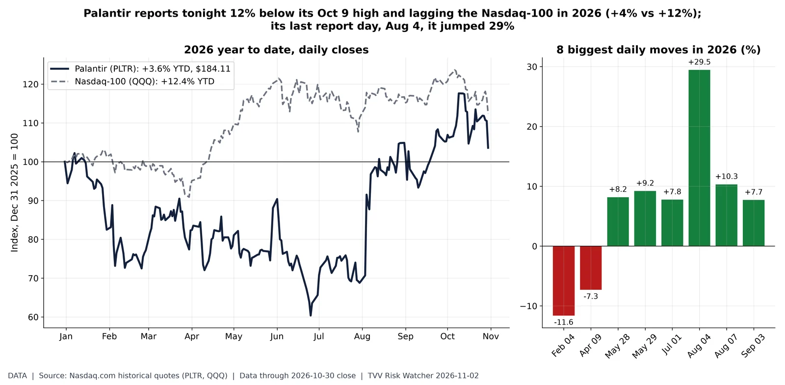
Palantir into earnings. Nasdaq.com daily closes through Fri Oct 30: PLTR $184.11, +3.6% year to date vs QQQ +12.4%; 11.9% below its $209.05 close on Oct 09 2026. Largest 2026 one-day move +29.5% on Aug 04, the session after its Q2 report. Palantir reports Q3 results Mon Nov 2 after the close. Source: https://www.nasdaq.com/market-activity/stocks/pltr/historical
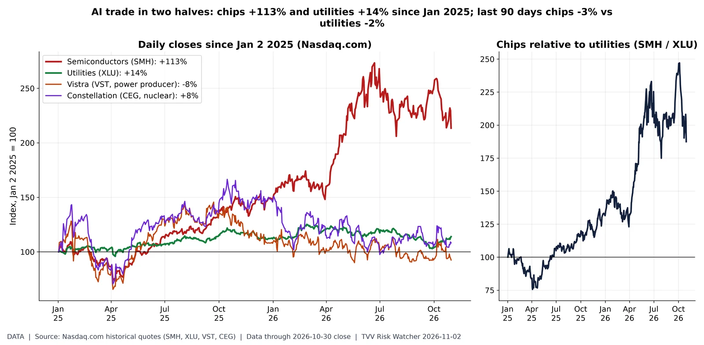
AI chips vs AI power. Nasdaq.com daily closes through Fri Oct 30: Semiconductors (SMH) +113.4%; Utilities (XLU) +13.9%; Vistra (VST, power producer) -7.5%; Constellation (CEG, nuclear) +8.2% since Jan 2 2025. Last 90 days: SMH -3.3%, XLU -2.1%. Data-center growth runs on two trades: chips (Nvidia, TSMC, Broadcom in SMH) and electricity (utilities and power producers selling to data centers). The SMH/XLU ratio shows which side the market is paying for; concentration risk if both depend on the same AI capex. Source: https://www.nasdaq.com/market-activity/etf/smh/historical
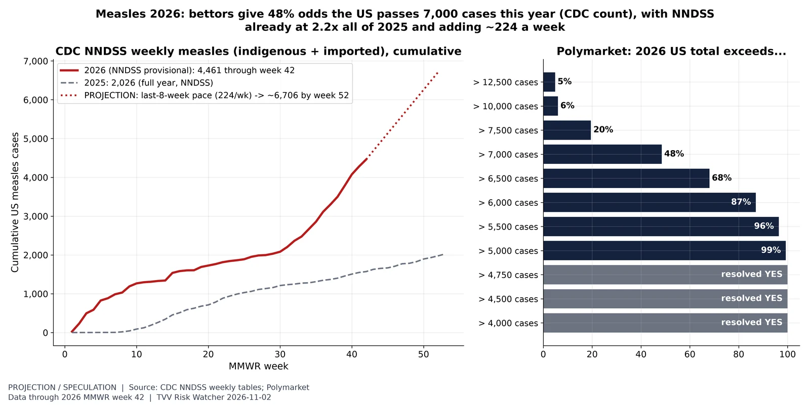
Measles: pace and year-end odds. PREDICTIVE. NNDSS provisional weekly measles cases (indigenous + imported), US residents: 4,461 through MMWR week 42 of 2026 vs 2,026 in all of 2025. Method: last-8-week average (224.5/week) held to week 52 (~6,706), a labeled straight-line projection. Polymarket thresholds ~7:30 AM ET Nov 2 (resolve on the CDC measles page count, which runs ahead of NNDSS weekly tables; rungs up to 4,750 have already resolved Yes): >5k 99%, >5.5k 96%, >6k 87%, >6.5k 68%, >7k 48%, >7.5k 20%, >10k 6%, >12.5k 5%. Source: https://data.cdc.gov/NNDSS/NNDSS-Weekly-Data/x9gk-5huc
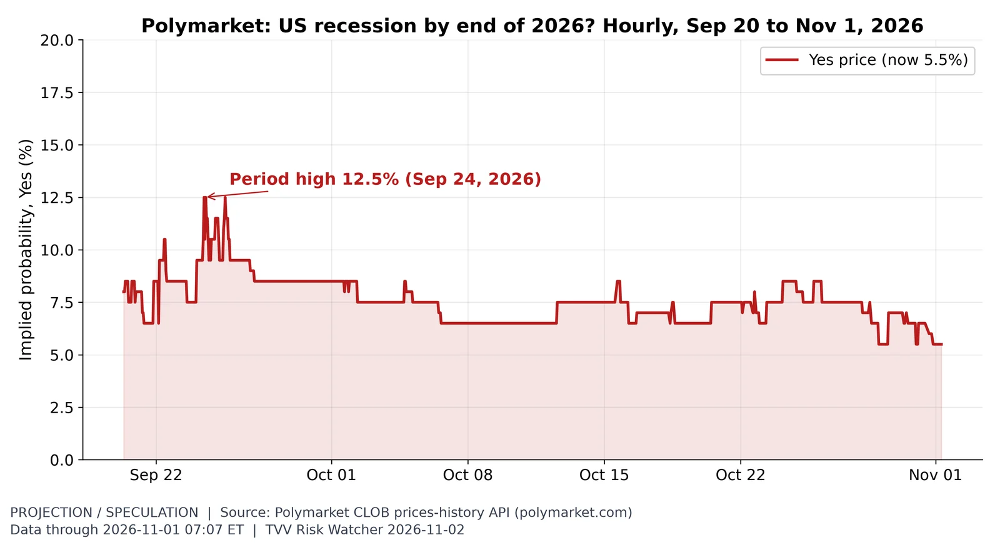
Recession odds. Traders price a 5.5% chance of a US recession by end-2026 (market rules define it), vs a high of 12.5% on Sep 24 in the API history window (hourly since Sep 20). Source: https://polymarket.com/event/us-recession-by-end-of-2026
10Y at 5%: 2026 high is the highest since 2002. The 10-year Treasury closed at 4.94% on Oct 30 (30-year 5.31%, 2-year 4.56%); its 2026 high of 5.31% on Oct 5 was the highest since May 2002. The FOMC held at 3.75-4.00% on Oct 28. Source: https://fred.stlouisfed.org/series/DGS10
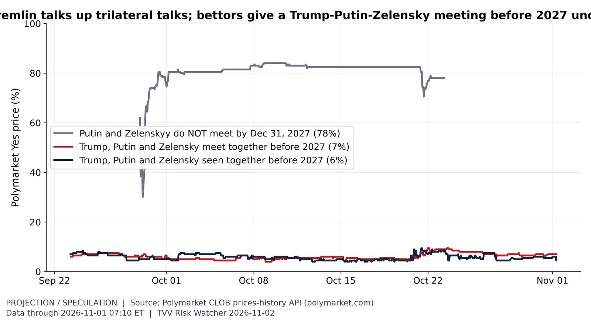
Summit talk vs summit odds. Polymarket ~07:10 ET Nov 1: Trump, Putin and Zelensky meet together before 2027 7%; seen together before 2027 6%; Putin and Zelenskyy do not meet at all by end-2027 78%. The meet-before-2027 price ranged 4.0-9.5% in October despite Kremlin talk of trilateral talks in mid-November. Thin markets ($60K-$108K volume); crowd prices, not forecasts. Source: https://polymarket.com/event/trump-putin-and-zelensky-meet-together-before-2027
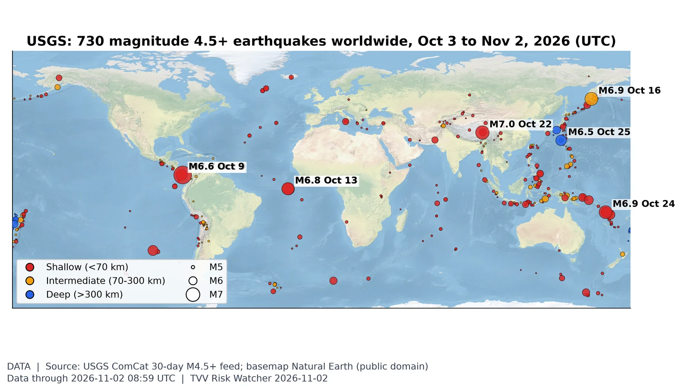
Where the earth shook this month. USGS logged 730 M4.5+ quakes in the 30 days to Nov 2, 22 of them M6+; the largest was M7.7 10 km WSW of Pitaloza Arriba, Panama on Oct 9 (UTC). Source: https://earthquake.usgs.gov/earthquakes/map/
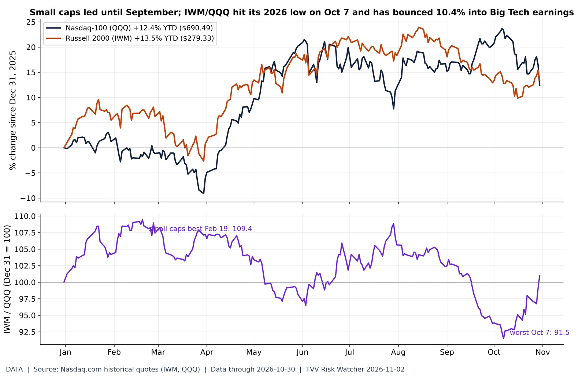
Is the rally broadening?. Closes Fri Oct 30: QQQ $690.49 (+12.4% YTD) vs IWM $279.33 (+13.5%). The IWM/QQQ ratio is 101.0 (Dec 31 = 100), +7.7% over the last 20 sessions; its 2026 high was 109.4 on Feb 19 and its low 91.5 on Oct 7, so small caps have regained 10.4% relative to Nasdaq-100 since. A rising ratio means breadth beyond megacaps; Microsoft, Alphabet, Amazon and Meta have reported Q3; Apple reports Nov 2 after the close. Source: https://www.nasdaq.com/market-activity/etf/iwm/historical
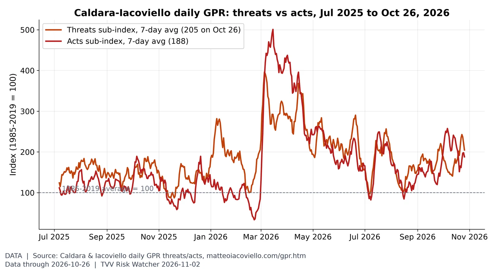
Threats vs acts. In the week to Oct 26 the threats sub-index averaged 205 and the acts sub-index 188 (2026 highs of the 7-day averages: threats 396 on Mar 5, acts 501 on Mar 15). Source: https://www.matteoiacoviello.com/gpr.htm